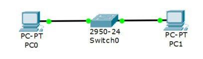

Личная страница
Мурзайкина Олеся, ИДМ-17-01

МГТУ "Станкин" |
Лабораторная работа №1
Задачи:
1. Зарегистрироваться на GitHub.
2.Создать персональную веб страницу-отчет с использованием html, css, js..
3. Загрузить персональную веб страницу-отчет в репозиторий ИДМ-17 по курсу "Интернет-технологии" на GitHub.
Лабораторная работа №2
Задачи:
1.Собрать команду для разработки веб-приложения (SPA) и распределить роли.
Ссылка на страницу команд2.Разработать макет страницы веб-приложения.
Ссылка на макет3.Разработать веб-приложение.
Работающий прототипЛабораторная работа №3
Задачи:
1.Настроить коммутаторы и маршрутизаторы.
2.Отчет по лабораторной работе.
Лабораторная работа №3.
Расчет диапазонов подсетей.
| A | B | C | |
|---|---|---|---|
| Кол-во узлов | 5 | 965 | 1024 |
| subnet | 192.168.2.0 | 172.16.2.0 | 10.10.2.0 |
| mask | 255.255.255.248 | 255.255.252.0 | 255.255.248.0 |
| broadcast | 192.168.2.7 | 172.16.5.255 | 10.10.9.255 |
ШАГ 1: Разместить на рабочем поле коммутатор и два компьютера и соединить их

ШАГ 2: Добавить на рабочее поле еще один коммутатор с двумя компьютерами и настроить адресацию из другой подсети

ШАГ 3: Соединить коммутаторы между собой и проверить работоспособность сети (Не работает, так как коммутаторы подсоединяются только к маршрутизаторам)

ШАГ 4: Добавить маршрутизатор на рабочее поле

ШАГ 5: Добавить на рабочее поле еще один маршрутизатор. Подключить к нему коммутатор и компьютер

| Устройство | IP - адрес | Маска | Шлюз |
|---|---|---|---|
| PC0 | 192.168.2.6 | 255.255.255.248 | 192.168.2.1 |
| PC1 | 192.168.2.5 | 255.255.255.248 | 192.168.2.1 |
| PC2 | 172.16.5.254 | 255.255.252.0 | 172.16.2.1 |
| PC3 | 172.16.5.253 | 255.255.252.0 | 172.16.2.1 |
| PC4 | 10.10.9.254 | 255.255.248.0 | 10.10.2.1 |
| R0 0/0 | 192.168.2.1 | 255.255.255.248 | |
| R0 0/1 | 172.16.2.1 | 255.255.252.0 | |
| R0 0/2 | 15.15.2.2 | 255.255.255.252 | |
| R1 0/1 | 10.10.2.1 | 255.255.248.0 | |
| R1 0/2 | 15.15.2.1 | 255.255.255.252 |
Настройка статической маршрутизации производится при помощи команды: ip route [сеть назначения] [маска] [маршрут]
Установить банер на сетевое оборудование: banner motd [баннер]
Проверка работоспособности сети:

Пакеты успешно отправляются!
Лабораторная работа №4
Задачи:
Самооценка прохождения теста по инновациям, формулировка одного вопроса по теме "Интернет-технологии" в одной из форм, встречающихся в тесте (выбор одного, выбор многих, упорядочивание, соответствие)
VPN (англ. Virtual Private Network — виртуальная частная сеть) является комбинацией нескольких самостоятельных сервисов (механизмов) безопасности:
1. управления, шифрования, туннелирования
2. шифрования, экранирования, туннелирования .
3. протоколирования и аудита, идентификация и аутентификация, экранирования
2. шифрования, экранирования, туннелирования
Источник